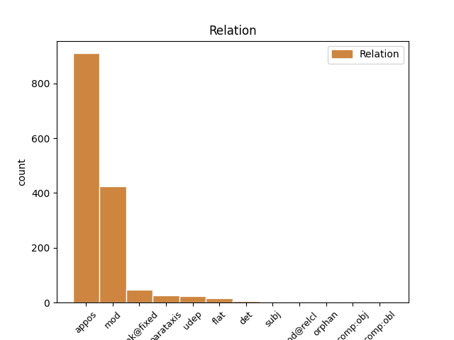
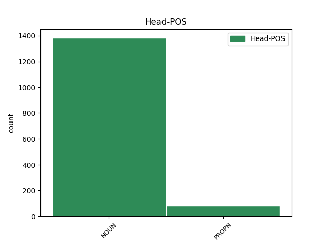
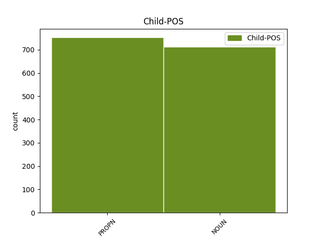

Distribution of features within this leaf



Agreement Rules sorted by frequency.
- When the dependent token is the appositional modifier(appos) of the head token, and the head token is NOUN and the dependent token is PROPN.
1 Welk _ _ _ _ 0 _ _ _
2 Duits _ _ _ _ 0 _ _ _
3 automerk _ _ _ _ 0 _ _ _
4 werd _ _ _ _ 0 _ _ _
5 genoemd _ _ _ _ 0 _ _ _
6 naar _ _ _ _ 0 _ _ _
7 de _ _ _ _ 0 _ _ _
8 voornaam _ _ _ _ 0 _ _ _
9 van _ _ _ _ 0 _ _ _
10 de _ _ _ _ 0 _ _ _
11 dochter _ _ _ _ 0 _ _ _
12 van _ _ _ _ 0 _ _ _
13 een _ _ _ _ 0 _ _ _
14 medewerker _ _ _ _ 0 _ _ _
15 van _ _ _ _ 0 _ _ _
16 het _ _ _ _ 0 _ _ _
17 bedrijf bedrijf NOUN N|soort|ev|basis|onz|stan Gender=Neut|Number=Sing 0 _ _ _
18 Daimler Daimler PROPN N|eigen|ev|basis|onz|stan Gender=Neut|Number=Sing 17 appos _ SpaceAfter=No
19 ? _ _ _ _ 0 _ _ _
1 Hoe _ _ _ _ 0 _ _ _
2 noemt _ _ _ _ 0 _ _ _
3 men _ _ _ _ 0 _ _ _
4 een _ _ _ _ 0 _ _ _
5 uit _ _ _ _ 0 _ _ _
6 stof stof NOUN N|soort|ev|basis|zijd|stan Gender=Com|Number=Sing 0 _ _ _
7 ( _ _ _ _ 0 _ _ _
8 zijde zijde NOUN N|soort|ev|basis|zijd|stan Gender=Com|Number=Sing 6 mod _ SpaceAfter=No
9 , _ _ _ _ 0 _ _ _
10 wol _ _ _ _ 0 _ _ _
11 , _ _ _ _ 0 _ _ _
12 enz. _ _ _ _ 0 _ _ _
13 ) _ _ _ _ 0 _ _ _
14 of _ _ _ _ 0 _ _ _
15 edelmetaal _ _ _ _ 0 _ _ _
16 , _ _ _ _ 0 _ _ _
17 vervaardigde _ _ _ _ 0 _ _ _
18 hoofd- _ _ _ _ 0 _ _ _
19 of _ _ _ _ 0 _ _ _
20 voorhoofdsband _ _ _ _ 0 _ _ _
21 ? _ _ _ _ 0 _ _ _
1 Welke _ _ _ _ 0 _ _ _
2 kleur _ _ _ _ 0 _ _ _
3 hebben _ _ _ _ 0 _ _ _
4 de _ _ _ _ 0 _ _ _
5 achterste _ _ _ _ 0 _ _ _
6 vleugels _ _ _ _ 0 _ _ _
7 van _ _ _ _ 0 _ _ _
8 de _ _ _ _ 0 _ _ _
9 vlinder vlinder NOUN N|soort|ev|basis|zijd|stan Gender=Com|Number=Sing 0 _ _ _
10 ligusterpijlstaart ligusterpijlstaart NOUN N|soort|ev|basis|zijd|stan Gender=Com|Number=Sing 9 appos _ SpaceAfter=No
11 ? _ _ _ _ 0 _ _ _
1 De _ _ _ _ 0 _ _ _
2 ziekte _ _ _ _ 0 _ _ _
3 parotitis parotitis NOUN N|soort|ev|basis|zijd|stan Gender=Com|Number=Sing 0 _ _ _
4 epidemica epidemica NOUN N|soort|ev|basis|zijd|stan Gender=Com|Number=Sing 3 unk@fixed _ _
5 veroorzaakt _ _ _ _ 0 _ _ _
6 ontsteking _ _ _ _ 0 _ _ _
7 van _ _ _ _ 0 _ _ _
8 de _ _ _ _ 0 _ _ _
9 oorspeekselklier _ _ _ _ 0 _ _ _
10 . _ _ _ _ 0 _ _ _
11 Hoe _ _ _ _ 0 _ _ _
12 heet _ _ _ _ 0 _ _ _
13 ze _ _ _ _ 0 _ _ _
14 in _ _ _ _ 0 _ _ _
15 het _ _ _ _ 0 _ _ _
16 Nederlands _ _ _ _ 0 _ _ _
17 ? _ _ _ _ 0 _ _ _
1 Hoe _ _ _ _ 0 _ _ _
2 begint _ _ _ _ 0 _ _ _
3 , _ _ _ _ 0 _ _ _
4 volgens _ _ _ _ 0 _ _ _
5 de _ _ _ _ 0 _ _ _
6 Hamer Hamer PROPN N|eigen|ev|basis|zijd|stan Gender=Com|Number=Sing 7 mod _ _
7 methode methode NOUN N|soort|ev|basis|zijd|stan Gender=Com|Number=Sing 0 _ _ _
8 , _ _ _ _ 0 _ _ _
9 kanker _ _ _ _ 0 _ _ _
10 ? _ _ _ _ 0 _ _ _
1 Van _ _ _ _ 0 _ _ _
2 wie _ _ _ _ 0 _ _ _
3 had _ _ _ _ 0 _ _ _
4 Maradona _ _ _ _ 0 _ _ _
5 hulp _ _ _ _ 0 _ _ _
6 gekregen _ _ _ _ 0 _ _ _
7 met _ _ _ _ 0 _ _ _
8 zijn _ _ _ _ 0 _ _ _
9 roemruchte _ _ _ _ 0 _ _ _
10 treffer _ _ _ _ 0 _ _ _
11 tegen _ _ _ _ 0 _ _ _
12 Engeland _ _ _ _ 0 _ _ _
13 tijdens _ _ _ _ 0 _ _ _
14 het _ _ _ _ 0 _ _ _
15 WK wk PROPN N|eigen|ev|basis|onz|stan Gender=Neut|Number=Sing 0 _ _ _
16 voetbal voetbal NOUN N|soort|ev|basis|onz|stan Gender=Neut|Number=Sing 15 appos _ _
17 van _ _ _ _ 0 _ _ _
18 1986 _ _ _ _ 0 _ _ _
19 ? _ _ _ _ 0 _ _ _
1 Cryptogram cryptogram NOUN N|soort|ev|basis|onz|stan Gender=Neut|Number=Sing 0 _ _ _
2 . _ _ _ _ 0 _ _ _
3 Lichtgevend _ _ _ _ 0 _ _ _
4 wasproduct wasproduct NOUN N|soort|ev|basis|onz|stan Gender=Neut|Number=Sing 1 parataxis _ _
5 ( _ _ _ _ 0 _ _ _
6 vijf _ _ _ _ 0 _ _ _
7 letters _ _ _ _ 0 _ _ _
8 ) _ _ _ _ 0 _ _ _
9 . _ _ _ _ 0 _ _ _
1 Waar _ _ _ _ 0 _ _ _
2 vond _ _ _ _ 0 _ _ _
3 de _ _ _ _ 0 _ _ _
4 Wereld wereld NOUN N|soort|ev|basis|zijd|stan Gender=Com|Number=Sing 0 _ _ _
5 Klimaat _ _ _ _ 0 _ _ _
6 Conferentie conferentie NOUN N|soort|ev|basis|zijd|stan Gender=Com|Number=Sing 4 flat _ _
7 plaats _ _ _ _ 0 _ _ _
8 in _ _ _ _ 0 _ _ _
9 1995 _ _ _ _ 0 _ _ _
10 ? _ _ _ _ 0 _ _ _
1 Naar _ _ _ _ 0 _ _ _
2 welke _ _ _ _ 0 _ _ _
3 school _ _ _ _ 0 _ _ _
4 ging _ _ _ _ 0 _ _ _
5 William _ _ _ _ 0 _ _ _
6 , _ _ _ _ 0 _ _ _
7 de _ _ _ _ 0 _ _ _
8 oudste _ _ _ _ 0 _ _ _
9 zoon _ _ _ _ 0 _ _ _
10 van _ _ _ _ 0 _ _ _
11 Prins Prins PROPN N|eigen|ev|basis|zijd|stan Gender=Com|Number=Sing 0 _ _ _
12 Charles Charles PROPN N|eigen|ev|basis|zijd|stan Gender=Com|Number=Sing 11 appos _ SpaceAfter=No
13 ? _ _ _ _ 0 _ _ _
1 Van _ _ _ _ 0 _ _ _
2 welke _ _ _ _ 0 _ _ _
3 Belgische _ _ _ _ 0 _ _ _
4 koning _ _ _ _ 0 _ _ _
5 was _ _ _ _ 0 _ _ _
6 Belgisch _ _ _ _ 0 _ _ _
7 Congo _ _ _ _ 0 _ _ _
8 eertijds eertijds NOUN N|soort|ev|basis|onz|stan Gender=Neut|Number=Sing 11 udep _ _
9 het _ _ _ _ 0 _ _ _
10 persoonlijk _ _ _ _ 0 _ _ _
11 bezit bezit NOUN N|soort|ev|basis|onz|stan Gender=Neut|Number=Sing 0 _ _ _
12 ? _ _ _ _ 0 _ _ _
1 Na _ _ _ _ 0 _ _ _
2 Robert _ _ _ _ 0 _ _ _
3 Kramers _ _ _ _ 0 _ _ _
4 Ice _ _ _ _ 0 _ _ _
5 is _ _ _ _ 0 _ _ _
6 End _ _ _ _ 0 _ _ _
7 of _ _ _ _ 0 _ _ _
8 the _ _ _ _ 0 _ _ _
9 Road _ _ _ _ 0 _ _ _
10 de _ _ _ _ 0 _ _ _
11 tweede _ _ _ _ 0 _ _ _
12 film _ _ _ _ 0 _ _ _
13 uit _ _ _ _ 0 _ _ _
14 het _ _ _ _ 0 _ _ _
15 Holland _ _ _ _ 0 _ _ _
16 Festival _ _ _ _ 0 _ _ _
17 programma _ _ _ _ 0 _ _ _
18 USA-Today _ _ _ _ 0 _ _ _
19 die _ _ _ _ 0 _ _ _
20 in _ _ _ _ 0 _ _ _
21 het _ _ _ _ 0 _ _ _
22 normale _ _ _ _ 0 _ _ _
23 bioscooproulement _ _ _ _ 0 _ _ _
24 werd _ _ _ _ 0 _ _ _
25 opgenomen _ _ _ _ 0 _ _ _
26 ( _ _ _ _ 0 _ _ _
27 Kriterion Kriterion PROPN N|eigen|ev|basis|onz|stan Gender=Neut|Number=Sing 0 _ _ _
28 , _ _ _ _ 0 _ _ _
29 Amsterdam Amsterdam PROPN N|eigen|ev|basis|onz|stan Gender=Neut|Number=Sing 27 mod _ SpaceAfter=No
30 ) _ _ _ _ 0 _ _ _
31 . _ _ _ _ 0 _ _ _
1 De _ _ _ _ 0 _ _ _
2 schade schade NOUN N|soort|ev|basis|zijd|stan Gender=Com|Number=Sing 0 _ _ _
3 , _ _ _ _ 0 _ _ _
4 waaronder _ _ _ _ 0 _ _ _
5 ook _ _ _ _ 0 _ _ _
6 de _ _ _ _ 0 _ _ _
7 waterschade waterschade NOUN N|soort|ev|basis|zijd|stan Gender=Com|Number=Sing 2 mod@relcl _ _
8 aan _ _ _ _ 0 _ _ _
9 andere _ _ _ _ 0 _ _ _
10 panden _ _ _ _ 0 _ _ _
11 , _ _ _ _ 0 _ _ _
12 wordt _ _ _ _ 0 _ _ _
13 op _ _ _ _ 0 _ _ _
14 ruim _ _ _ _ 0 _ _ _
15 tien _ _ _ _ 0 _ _ _
16 miljoen _ _ _ _ 0 _ _ _
17 gulden _ _ _ _ 0 _ _ _
18 geschat _ _ _ _ 0 _ _ _
19 . _ _ _ _ 0 _ _ _
1 Volgens _ _ _ _ 0 _ _ _
2 de _ _ _ _ 0 _ _ _
3 ministers _ _ _ _ 0 _ _ _
4 Den _ _ _ _ 0 _ _ _
5 Toom _ _ _ _ 0 _ _ _
6 ( _ _ _ _ 0 _ _ _
7 Defensie _ _ _ _ 0 _ _ _
8 ) _ _ _ _ 0 _ _ _
9 en _ _ _ _ 0 _ _ _
10 Polak Polak PROPN N|eigen|ev|basis|zijd|stan Gender=Com|Number=Sing 0 _ _ _
11 ( _ _ _ _ 0 _ _ _
12 Justitie justitie NOUN N|soort|ev|basis|zijd|stan Gender=Com|Number=Sing 10 mod _ SpaceAfter=No
13 ) _ _ _ _ 0 _ _ _
14 " _ _ _ _ 0 _ _ _
15 strookte _ _ _ _ 0 _ _ _
16 hun _ _ _ _ 0 _ _ _
17 executie _ _ _ _ 0 _ _ _
18 niet _ _ _ _ 0 _ _ _
19 met _ _ _ _ 0 _ _ _
20 het _ _ _ _ 0 _ _ _
21 militaire _ _ _ _ 0 _ _ _
22 strafprocesrecht _ _ _ _ 0 _ _ _
23 " _ _ _ _ 0 _ _ _
24 , _ _ _ _ 0 _ _ _
25 zo _ _ _ _ 0 _ _ _
26 delen _ _ _ _ 0 _ _ _
27 zij _ _ _ _ 0 _ _ _
28 mee _ _ _ _ 0 _ _ _
29 op _ _ _ _ 0 _ _ _
30 vragen _ _ _ _ 0 _ _ _
31 van _ _ _ _ 0 _ _ _
32 het _ _ _ _ 0 _ _ _
33 Kamerlid _ _ _ _ 0 _ _ _
34 drs. _ _ _ _ 0 _ _ _
35 Lems _ _ _ _ 0 _ _ _
36 ( _ _ _ _ 0 _ _ _
37 PvdA _ _ _ _ 0 _ _ _
38 ) _ _ _ _ 0 _ _ _
39 . _ _ _ _ 0 _ _ _
1 " _ _ _ _ 0 _ _ _
2 Niet _ _ _ _ 0 _ _ _
3 , _ _ _ _ 0 _ _ _
4 Eric Eric PROPN N|eigen|ev|basis|zijd|stan Gender=Com|Number=Sing 0 _ _ _
5 , _ _ _ _ 0 _ _ _
6 Eric Eric PROPN N|eigen|ev|basis|zijd|stan Gender=Com|Number=Sing 4 parataxis _ SpaceAfter=No
7 . _ _ _ _ 0 _ _ _
8 " _ _ _ _ 0 _ _ _
1 Oom oom NOUN N|soort|ev|basis|zijd|stan Gender=Com|Number=Sing 0 _ _ _
2 Jan Jan PROPN N|eigen|ev|basis|zijd|stan Gender=Com|Number=Sing 1 flat _ _
3 heeft _ _ _ _ 0 _ _ _
4 het _ _ _ _ 0 _ _ _
5 nog _ _ _ _ 0 _ _ _
6 proberen _ _ _ _ 0 _ _ _
7 te _ _ _ _ 0 _ _ _
8 doen _ _ _ _ 0 _ _ _
9 , _ _ _ _ 0 _ _ _
10 maar _ _ _ _ 0 _ _ _
11 vergeefs _ _ _ _ 0 _ _ _
12 . _ _ _ _ 0 _ _ _
1 Vooral _ _ _ _ 0 _ _ _
2 met _ _ _ _ 0 _ _ _
3 Wouter Wouter PROPN N|eigen|ev|basis|zijd|stan Gender=Com|Number=Sing 5 subj _ _
4 de _ _ _ _ 0 _ _ _
5 baas baas NOUN N|soort|ev|basis|zijd|stan Gender=Com|Number=Sing 0 _ _ _
6 vrees _ _ _ _ 0 _ _ _
7 ik _ _ _ _ 0 _ _ _
8 het _ _ _ _ 0 _ _ _
9 ergste _ _ _ _ 0 _ _ _
1 In _ _ _ _ 0 _ _ _
2 ieder _ _ _ _ 0 _ _ _
3 geval _ _ _ _ 0 _ _ _
4 hebben _ _ _ _ 0 _ _ _
5 we _ _ _ _ 0 _ _ _
6 als _ _ _ _ 0 _ _ _
7 vijf _ _ _ _ 0 _ _ _
8 Zuidhollandse _ _ _ _ 0 _ _ _
9 gemeenten _ _ _ _ 0 _ _ _
10 dank dank NOUN N|soort|ev|basis|zijd|stan Gender=Com|Number=Sing 0 _ _ _
11 zij _ _ _ _ 0 _ _ _
12 deze _ _ _ _ 0 _ _ _
13 voorstudie voorstudie NOUN N|soort|ev|basis|zijd|stan Gender=Com|Number=Sing 10 comp:obj _ _
14 alvast _ _ _ _ 0 _ _ _
15 een _ _ _ _ 0 _ _ _
16 aardige _ _ _ _ 0 _ _ _
17 inbreng _ _ _ _ 0 _ _ _
18 . _ _ _ _ 0 _ _ _
19 " _ _ _ _ 0 _ _ _
1 De _ _ _ _ 0 _ _ _
2 miljoenennota _ _ _ _ 0 _ _ _
3 zal _ _ _ _ 0 _ _ _
4 er _ _ _ _ 0 _ _ _
5 , _ _ _ _ 0 _ _ _
6 als _ _ _ _ 0 _ _ _
7 het _ _ _ _ 0 _ _ _
8 deze _ _ _ _ 0 _ _ _
9 regering regering NOUN N|soort|ev|basis|zijd|stan Gender=Com|Number=Sing 10 comp:obl _ _
10 ernst ernst NOUN N|soort|ev|basis|zijd|stan Gender=Com|Number=Sing 0 _ _ _
11 is _ _ _ _ 0 _ _ _
12 , _ _ _ _ 0 _ _ _
13 het _ _ _ _ 0 _ _ _
14 een _ _ _ _ 0 _ _ _
15 en _ _ _ _ 0 _ _ _
16 ander _ _ _ _ 0 _ _ _
17 van _ _ _ _ 0 _ _ _
18 moeten _ _ _ _ 0 _ _ _
19 onthullen _ _ _ _ 0 _ _ _
20 . _ _ _ _ 0 _ _ _
1 Of _ _ _ _ 0 _ _ _
2 dat _ _ _ _ 0 _ _ _
3 zijn _ _ _ _ 0 _ _ _
4 weerslag _ _ _ _ 0 _ _ _
5 had _ _ _ _ 0 _ _ _
6 op _ _ _ _ 0 _ _ _
7 de _ _ _ _ 0 _ _ _
8 zaal _ _ _ _ 0 _ _ _
9 , _ _ _ _ 0 _ _ _
10 weten _ _ _ _ 0 _ _ _
11 wij _ _ _ _ 0 _ _ _
12 niet _ _ _ _ 0 _ _ _
13 , _ _ _ _ 0 _ _ _
14 maar _ _ _ _ 0 _ _ _
15 in _ _ _ _ 0 _ _ _
16 die _ _ _ _ 0 _ _ _
17 zaal _ _ _ _ 0 _ _ _
18 ontbrak _ _ _ _ 0 _ _ _
19 het _ _ _ _ 0 _ _ _
20 ten _ _ _ _ 0 _ _ _
21 enenmale _ _ _ _ 0 _ _ _
22 aan _ _ _ _ 0 _ _ _
23 de _ _ _ _ 0 _ _ _
24 feestelijk-opgewekte _ _ _ _ 0 _ _ _
25 spanning _ _ _ _ 0 _ _ _
26 van _ _ _ _ 0 _ _ _
27 de _ _ _ _ 0 _ _ _
28 verwachting _ _ _ _ 0 _ _ _
29 , _ _ _ _ 0 _ _ _
30 met _ _ _ _ 0 _ _ _
31 parallel _ _ _ _ 0 _ _ _
32 daaraan _ _ _ _ 0 _ _ _
33 als _ _ _ _ 0 _ _ _
34 symptoom symptoom NOUN N|soort|ev|basis|onz|stan Gender=Neut|Number=Sing 0 _ _ _
35 hiervan _ _ _ _ 0 _ _ _
36 het _ _ _ _ 0 _ _ _
37 flauwe _ _ _ _ 0 _ _ _
38 , _ _ _ _ 0 _ _ _
39 fletse _ _ _ _ 0 _ _ _
40 applaus applaus NOUN N|soort|ev|basis|onz|stan Gender=Neut|Number=Sing 34 subj _ SpaceAfter=No
41 , _ _ _ _ 0 _ _ _
42 waarmee _ _ _ _ 0 _ _ _
43 Jochum _ _ _ _ 0 _ _ _
44 werd _ _ _ _ 0 _ _ _
45 begroet _ _ _ _ 0 _ _ _
46 . _ _ _ _ 0 _ _ _
1 " _ _ _ _ 0 _ _ _
2 Indonesie _ _ _ _ 0 _ _ _
3 heeft _ _ _ _ 0 _ _ _
4 ruim _ _ _ _ 0 _ _ _
5 80 _ _ _ _ 0 _ _ _
6 miljoen _ _ _ _ 0 _ _ _
7 inwoners _ _ _ _ 0 _ _ _
8 , _ _ _ _ 0 _ _ _
9 Nederland Nederland PROPN N|eigen|ev|basis|onz|stan Gender=Neut|Number=Sing 0 _ _ _
10 maar _ _ _ _ 0 _ _ _
11 12 _ _ _ _ 0 _ _ _
12 miljoen miljoen NOUN N|soort|ev|basis|onz|stan Gender=Neut|Number=Sing 9 orphan _ _
13 - _ _ _ _ 0 _ _ _
14 dus _ _ _ _ 0 _ _ _
15 heeft _ _ _ _ 0 _ _ _
16 Indonesie _ _ _ _ 0 _ _ _
17 gelijk _ _ _ _ 0 _ _ _
18 . _ _ _ _ 0 _ _ _
19 " _ _ _ _ 0 _ _ _
1 De _ _ _ _ 0 _ _ _
2 duiven _ _ _ _ 0 _ _ _
3 hebben _ _ _ _ 0 _ _ _
4 anderhalf _ _ _ _ 0 _ _ _
5 uur _ _ _ _ 0 _ _ _
6 achterstand _ _ _ _ 0 _ _ _
7 op _ _ _ _ 0 _ _ _
8 een _ _ _ _ 0 _ _ _
9 groep groep NOUN N|soort|ev|basis|zijd|stan Gender=Com|Number=Sing 0 _ _ _
10 van _ _ _ _ 0 _ _ _
11 vijf _ _ _ _ 0 _ _ _
12 , _ _ _ _ 0 _ _ _
13 waarin _ _ _ _ 0 _ _ _
14 Eddy Eddy PROPN N|eigen|ev|basis|zijd|stan Gender=Com|Number=Sing 9 mod@relcl _ SpaceAfter=No
15 , _ _ _ _ 0 _ _ _
16 Rini _ _ _ _ 0 _ _ _
17 , _ _ _ _ 0 _ _ _
18 Walter _ _ _ _ 0 _ _ _
19 en _ _ _ _ 0 _ _ _
20 Mogens _ _ _ _ 0 _ _ _
21 . _ _ _ _ 0 _ _ _
1 In _ _ _ _ 0 _ _ _
2 de _ _ _ _ 0 _ _ _
3 Zaan _ _ _ _ 0 _ _ _
4 , _ _ _ _ 0 _ _ _
5 is _ _ _ _ 0 _ _ _
6 het _ _ _ _ 0 _ _ _
7 zaterdag zaterdag PROPN N|eigen|ev|basis|zijd|stan Gender=Com|Number=Sing 11 udep _ _
8 13 _ _ _ _ 0 _ _ _
9 september _ _ _ _ 0 _ _ _
10 " _ _ _ _ 0 _ _ _
11 molendag molendag NOUN N|soort|ev|basis|zijd|stan Gender=Com|Number=Sing 0 _ _ _
12 " _ _ _ _ 0 _ _ _
13 . _ _ _ _ 0 _ _ _
Disagree Examples:
1 Als _ _ _ _ 0 _ _ _
2 de _ _ _ _ 0 _ _ _
3 crisis _ _ _ _ 0 _ _ _
4 niet _ _ _ _ 0 _ _ _
5 wordt _ _ _ _ 0 _ _ _
6 opgelost _ _ _ _ 0 _ _ _
7 , _ _ _ _ 0 _ _ _
8 is _ _ _ _ 0 _ _ _
9 het _ _ _ _ 0 _ _ _
10 niet _ _ _ _ 0 _ _ _
11 ondenkbaar _ _ _ _ 0 _ _ _
12 dat _ _ _ _ 0 _ _ _
13 de _ _ _ _ 0 _ _ _
14 federatie federatie NOUN N|soort|ev|basis|zijd|stan Gender=Com|Number=Sing 0 _ _ _
15 Joegoslavië Joegoslavië PROPN N|eigen|ev|basis|onz|stan Gender=Neut|Number=Sing 14 appos _ _
16 definitief _ _ _ _ 0 _ _ _
17 uiteenvalt _ _ _ _ 0 _ _ _
18 . _ _ _ _ 0 _ _ _
1 Die _ _ _ _ 0 _ _ _
2 regelt _ _ _ _ 0 _ _ _
3 de _ _ _ _ 0 _ _ _
4 verhouding _ _ _ _ 0 _ _ _
5 tussen _ _ _ _ 0 _ _ _
6 het _ _ _ _ 0 _ _ _
7 machtige _ _ _ _ 0 _ _ _
8 Servië _ _ _ _ 0 _ _ _
9 en _ _ _ _ 0 _ _ _
10 kleine _ _ _ _ 0 _ _ _
11 buur buur NOUN N|soort|ev|basis|zijd|stan Gender=Com|Number=Sing 0 _ _ _
12 Montenegro Montenegro PROPN N|eigen|ev|basis|onz|stan Gender=Neut|Number=Sing 11 appos _ SpaceAfter=No
13 . _ _ _ _ 0 _ _ _
1 Het _ _ _ _ 0 _ _ _
2 Joegoslavische _ _ _ _ 0 _ _ _
3 persbureau persbureau NOUN N|soort|ev|basis|onz|stan Gender=Neut|Number=Sing 0 _ _ _
4 Tanjug Tanjug PROPN N|eigen|ev|basis|zijd|stan Gender=Com|Number=Sing 3 appos _ _
5 meldde _ _ _ _ 0 _ _ _
6 dat _ _ _ _ 0 _ _ _
7 president _ _ _ _ 0 _ _ _
8 Kostunica _ _ _ _ 0 _ _ _
9 vandaag _ _ _ _ 0 _ _ _
10 begint _ _ _ _ 0 _ _ _
11 met _ _ _ _ 0 _ _ _
12 het _ _ _ _ 0 _ _ _
13 overleg _ _ _ _ 0 _ _ _
14 over _ _ _ _ 0 _ _ _
15 de _ _ _ _ 0 _ _ _
16 samenstelling _ _ _ _ 0 _ _ _
17 van _ _ _ _ 0 _ _ _
18 een _ _ _ _ 0 _ _ _
19 nieuwe _ _ _ _ 0 _ _ _
20 federale _ _ _ _ 0 _ _ _
21 regering _ _ _ _ 0 _ _ _
22 . _ _ _ _ 0 _ _ _
1 De _ _ _ _ 0 _ _ _
2 heer heer NOUN N|soort|ev|basis|zijd|stan Gender=Com|Number=Sing 0 _ _ _
3 Sleiffer Sleiffer PROPN N|eigen|ev|basis|genus|stan Gender=Com,Neut|Number=Sing 2 appos _ _
4 werkt _ _ _ _ 0 _ _ _
5 als _ _ _ _ 0 _ _ _
6 bankemploye _ _ _ _ 0 _ _ _
7 buiten _ _ _ _ 0 _ _ _
8 Gorkum _ _ _ _ 0 _ _ _
9 en _ _ _ _ 0 _ _ _
10 de _ _ _ _ 0 _ _ _
11 heer _ _ _ _ 0 _ _ _
12 Breen _ _ _ _ 0 _ _ _
13 is _ _ _ _ 0 _ _ _
14 verbonden _ _ _ _ 0 _ _ _
15 aan _ _ _ _ 0 _ _ _
16 een _ _ _ _ 0 _ _ _
17 suikerfabriek _ _ _ _ 0 _ _ _
18 . _ _ _ _ 0 _ _ _
1 Onder _ _ _ _ 0 _ _ _
2 het _ _ _ _ 0 _ _ _
3 hoofd hoofd NOUN N|soort|ev|basis|onz|stan Gender=Neut|Number=Sing 0 _ _ _
4 literatuur literatuur NOUN N|soort|ev|basis|zijd|stan Gender=Com|Number=Sing 3 appos _ _
5 en _ _ _ _ 0 _ _ _
6 transcendentie _ _ _ _ 0 _ _ _
7 is _ _ _ _ 0 _ _ _
8 een _ _ _ _ 0 _ _ _
9 interessante _ _ _ _ 0 _ _ _
10 beschouwing _ _ _ _ 0 _ _ _
11 te _ _ _ _ 0 _ _ _
12 vinden _ _ _ _ 0 _ _ _
13 over _ _ _ _ 0 _ _ _
14 Graham _ _ _ _ 0 _ _ _
15 Greene _ _ _ _ 0 _ _ _
16 en _ _ _ _ 0 _ _ _
17 de _ _ _ _ 0 _ _ _
18 emancipatie _ _ _ _ 0 _ _ _
19 van _ _ _ _ 0 _ _ _
20 de _ _ _ _ 0 _ _ _
21 katholieke _ _ _ _ 0 _ _ _
22 roman _ _ _ _ 0 _ _ _
23 . _ _ _ _ 0 _ _ _